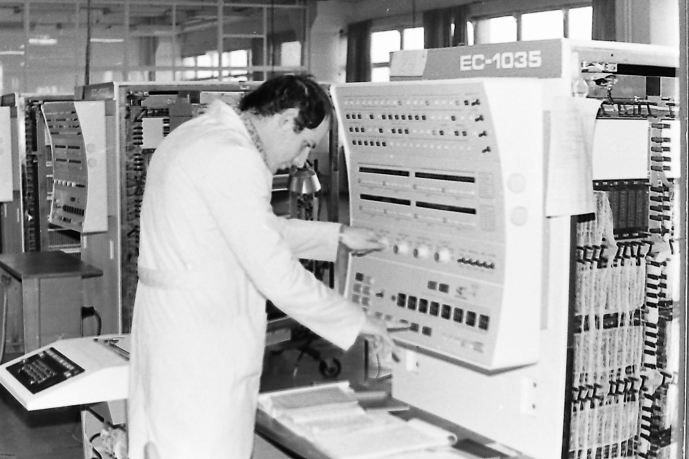

ЕС 1035
Технически характеристики:
- Производителност - 160 хил. операции в секунда по смес Гибсон-3.
- Пропускна способност на каналите - 1200 Кб/с.
- Заемана площ на основен комплект - 110 кв. метра.
- Работна температура на околната среда - 5-40°С.
- Мощност, употребявана от основен комплект - 40 кВ.
ЕС-1035 - Първата изчислителна машина от Серия-2(напълно съвместима програмно със серия IBM 370), е разработена под ръководството на Г. Д. Смирнов в Минск с активното участие на ЦИИТ-София. Машината поддържа виртуална памет. Произвежда се едновременно в Минск и ЗИТ София, България.
Основни компоненти на система ЕС 1035:
- Процесор ЕС-2635 (модели .03 или .21, шкафове) в състав:
- шкаф процесор ЕС-2435 или ЕС-2435.21 (микропрограмен, вертикален микрокод с ширина 32 бита, памет на микрокода с обем 32-48 КБ), имащ 1 мултиплексен и 4 селекторни канала. Мултиплексния канал се ползвал за бавни устройства - пънчове и четци на перфоленти и перфокарти , а селекторните канали за бързи устройства - дискови и лентови подсистеми.
- шкаф ОЗУ ЕС-3235, ЕС-3237 или ЕС-3238 (на микросхеми динамична памет с капацитет по 4 килобита).
- пулт на оператора ЕС-1535.01 или .03(резултатите от процеса на обработка на данните се подавали на пулт на оператора, за да може да се следи текущото изпълнение на задачите)
- Флопи дисково устройство за зареждане на микропрограмите ЕС-3535 (отделно устройство, което можело да се замени с твърд диск) - за първи път няма ПЗУ(постоянно запомнящо устройство), а микропрограмите се зареждат в RAM памет от флопи-диск.
- шкаф захранване ЕС-0835.01.
- Различни комплекти дискови и лентови подсистеми, като:
- дискова подсистема ЕС-5061-29МБ - представлявала шкаф контролер и до 8 бр. дискови устройства. Голяма част от машините се комплектовали с дискови подсистеми ЕС-5067-100 и 200МБ. В тези подсистеми се ползвали сменяеми магнитни дискове с капацитет 100 или 200 МБ, модели ИЗОТ А544Е или ИЗОТ А529Е, българско производство.
- лентова подсистема ЕС-5017 - шкаф контролер и до 8 бр. лентови устройства.